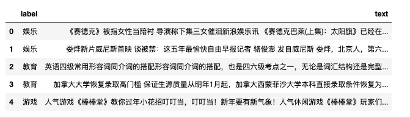
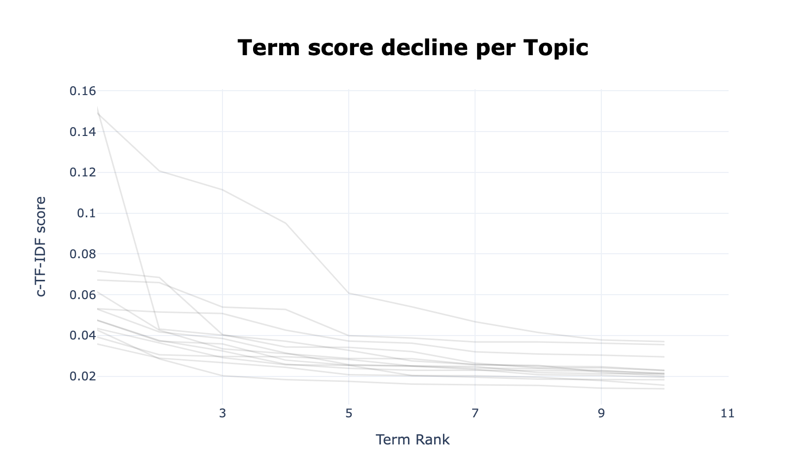

BERT是自然语言处理领域最新的词向量技术，而BERTopic 是基于BERT词向量进行主题建模技术，它利用 Transformer 和 c-TF-IDF 来创建密集的集群，允许轻松解释主题，同时在主题描述中保留重要词。
BERTopic亮点
- 支持引导式Guided
- 支持（半）监督式
- 支持动态主题。
- 支持可视化
安装
!pip3 install bertopic==0.10.0
!pip3 install cntext==1.6.5
准备数据
这里使用的新闻数据集， 共2000条。 新闻类别涵 '娱乐', '教育', '游戏', '财经', '时政', '时尚', '科技', '体育', '家居', '房产'
这里假设大家不知道有10类新闻题材， 构建模型的时候不会用到label字段的数据。
import pandas as pd
df = pd.read_csv('cnews.csv')
df.head()

# 新闻题材
print(df.label.unique())
#记录数
print(len(df))
Run
['娱乐' '教育' '游戏' '财经' '时政' '时尚' '科技' '体育' '家居' '房产']
2000
# 各类题材的新闻记录数
df.label.value_counts()
Run
时政 120
科技 106
时尚 106
财经 105
家居 103
教育 97
娱乐 96
体育 95
房产 87
游戏 85
这里定义了一个清洗数据函数clean_text，需要注意BERTopic需要先将中文分词改造成类似英文文本格式（用空格间隔词语）
import re
import jieba
import cntext as ct
stopwords = ct.load_pkl_dict('STOPWORDS.pkl')['STOPWORDS']['chinese']
def clean_text(text):
words = jieba.lcut(text)
words = [w for w in words if w not in stopwords]
return ' '.join(words)
test = "云南永善县级地震已致人伤间民房受损中新网月日电据云南昭通市防震减灾局官方网站消息截至日时云南昭通永善县级地震已造成人受伤其中重伤人轻伤人已全部送医院救治民房受损户间倒塌户间个乡镇所学校不同程度受损目前被损毁电力交通通讯设施已全部抢通修复当地已调拨帐篷顶紧急转移万人月日时分云南昭通永善县发生里氏级地震震源深度公里当地震感强烈此外成都等四川多地也有明显震感"
clean_text(test)
Run
'云南 永善县 级 地震 已致 伤间 民房 受损 中新网 日电 云南 昭通市 防震 减灾 局 官方网站 消息 日时 云南 昭通 永善县 级 地震 造成 受伤 重伤 轻伤 送 医院 救治 民房 受损 户间 倒塌 户间 乡镇 学校 不同 程度 受损 目前 损毁 电力 交通 通讯 设施 抢通 修复 调拨 帐篷 顶 紧急 转移 万人 时分 云南 昭通 永善县 发生 里氏 级 地震 震源 深度 公里 震感 强烈 成都 四川 多地 明显 震感'
对2000条数据进行clean_text，得到的结果存储到content字段中。
我的macbook内存16G, 运行时间10s
df['content'] = df['text'].apply(clean_text)
df.head()
训练Topic模型
文本分析步骤包括构建特征工程和训练，在本文中，直接使用开源的预训练中文词向量，省去了特征模型的学习时间。
选取的与训练模型均为word2vec格式，这样方便我们使用gensim将其导入。
| 模型名 | 数据 | 预训练模型资源地址 |
|---|---|---|
| sgns.zhihu.words.bz2 | 知乎 | 链接: https://pan.baidu.com/s/1BDxP28KL_23Odj9NWZGe-Q 提取码: n1qq |
| sgns.wiki.words.bz2 | 中文维基百科 | 链接: https://pan.baidu.com/s/1B1sxHmPeIPJYiCuP1zrmMw 提取码: hofj |
| sgns.financial.words.bz2 | 金融 | 链接: https://pan.baidu.com/s/1L_hmGjZMY2ExBn9Vfc_eRg 提取码: hhn6 |
| sgns.renmin.words.bz2 | 人民日报 | 链接: https://pan.baidu.com/s/1VQIDrwZH3Y3Lpy4-smPutw 提取码: 3b53 |
| sgns.sougou.words.bz2 | 搜狗新闻 | 链接: https://pan.baidu.com/s/15nCaeB41mwK0ZVLrukXpFQ 提取码: 04en |
Note:
除了表格外的资源，还可以使用spacy现有的预训练模型。
本文案例cnews.csv是新闻类数据，这里最好选择使用同样为新闻题材的文本训练出的模型，这样BERTopic效果会更精准一些。sgns.sougou.words.bz2是使用搜狗新闻数据训练的语言模型。
from gensim.models import KeyedVectors
chinese_sougou_news_models = KeyedVectors.load_word2vec_format('sgns.sogou.word.bz2', unicode_errors='ignore')
chinese_sougou_news_models
Run
<gensim.models.keyedvectors.KeyedVectors at 0x7f93e5b8cc10>
from bertopic import BERTopic
topic_model = BERTopic(language="chinese (simplified)",
embedding_model=chinese_sougou_news_models,
calculate_probabilities=True,
verbose=True)
docs = df['content'].tolist()
#2000条进行fit_transform需要1min
topics, probs = topic_model.fit_transform(docs)
100%|██████████| 2000/2000 [01:31<00:00, 21.91it/s]
2021-10-28 12:11:25,583 - BERTopic - Transformed documents to Embeddings
2021-10-28 12:11:34,582 - BERTopic - Reduced dimensionality with UMAP
2021-10-28 12:11:34,718 - BERTopic - Clustered UMAP embeddings with HDBSCAN
CPU times: user 1min 50s, sys: 7.7 s, total: 1min 57s
Wall time: 1min 43s
主题模型方法
- topic_model.get_topic_info 查看各主题信息
- topic_model.find_topics(term, top_n=5) 查找term最有可能所属话题
- topic_model.get_topic(0) 查看Topic 0的特征词
- topic_model.visualize_topics() 话题间距离的可视化
- topic_model.visualize_distribution(probs[0]) 查看某条文本的主题分布
- topic_model.visualize_hierarchy(top_n_topics=20) 主题层次聚类可视化
- topic_model.visualize_barchart(topics=[1]) 显示主题1的词条形图
- topic_model.visualize_heatmap(n_clusters=10) 主题相似度热力图
- topic_model.visualize_term_rank() 可视化词语
- topic_model.save() 保存主题模型
- topic_model.reduce_topics() 压缩主题个数(合并相近的主题)
.get_topic_info()
查看BERTopic基于cnews.csv数据， 跑出的各主题
topic_model.get_topic_info()
.find_topics(term)
查看与词语【投资】最相关的主题，返回候选的最相思的5个主题id
#
similar_topics, similarity = topic_model.find_topics("投资", top_n=5)
similar_topics
Run
[3, 9, 8, 10, 4]
.get_topic()
查看id为3的主题信息（主题词及权重）
topic_model.get_topic(3)
Run
[('基金', 0.15109221307919193),
('投资', 0.042856192509064),
('公司', 0.039785278320496976),
('市场', 0.037072163603417835),
('股票', 0.03230913401086524),
('型基金', 0.02721898070238429),
('收益', 0.025435672141638468),
('投资者', 0.024633503649868493),
('经理', 0.02458550023931051),
('发行', 0.022672639068067168)]
.visualize_topics()
可视化主题间距离
visualize_topics1 = topic_model.visualize_topics()
#可视化结果保存至html中，可以动态显示信息
visualize_topics1.write_html('visualize_topics.html')
visualize_topics1
.visualize_distribution()
显示第一条新闻的主题概率分布
first_new_topic_probs = topic_model.visualize_distribution(probs[0])
first_new_topic_probs.write_html('first_new_topic_probs.html')
first_new_topic_probs
点击查看first_new_topic_probs.html
为了理解主题的潜在层次结构，我们可以使用 scipy.cluster.hierarchy 创建聚类并可视化它们之间的关系。 这有助于合并相似主题，达到降低主题模型主题数量nr_topics。
.visualize_hierarchy(top_n_topics)
话题层次聚类可视化，模型跑出12个主题，这里就按12进行分层聚类
topic_model.visualize_hierarchy(top_n_topics=12)
.visualize_barchart(topics)
显示topics的词条形图
topic_model.visualize_barchart(topics=[1])
.visualize_heatmap(n_clusters)
话题相似热力图。BERTopic可将主题以embeddings形式（向量）表示， 因此我们可以应用余弦相似度来创建相似度矩阵。 每两两主题可进行余弦计算，最终结果将是一个矩阵，显示主题间的相似程度。
topic_similar_heatmap = topic_model.visualize_heatmap(n_clusters=11)
topic_similar_heatmap.write_html('topic_similar_heatmap.html')
topic_similar_heatmap
点击查看topic_similar_heatmap.html
通过根据每个主题表示的 c-TF-IDF 分数创建条形图来可视化主题的选定词语。 从主题之间和主题内的相对 c-TF-IDF 分数中获得见解。 此外，可以轻松地将主题表示相互比较。
.visualize_term_rank()
通过根据每个主题表示的 c-TF-IDF 分数创建条形图来可视化主题的选定词语。
从主题之间和主题内的相对 c-TF-IDF 分数中获得见解。
此外，可以轻松地将主题表示相互比较。
term_score_decline = topic_model.visualize_term_rank()
term_score_decline.write_html('term_score_decline.html')
term_score_decline
 点击查看term_score_decline.html
.update_topics()
更新主题模型。当您训练了一个模型并查看了代表它们的主题和单词时，您可能对表示不满意。 也许您忘记删除停用词，或者您想尝试不同的 n_gram_range。 我们可以使用函数 update_topics 使用 c-TF-IDF 的新参数更新主题表示。
使用.update_topics()更新，
topic_model.update_topics(df.content.tolist(), topics, n_gram_range=(1, 3))
topic_model得到了更新，
similar_topics, similarity = topic_model.find_topics("手机", top_n=5)
similar_topics
Run
[2, 7, 4, 1, 5]
查看话题2的信息
topic_model.get_topic(2)
Run
[('功能', 0.022132351014298786),
('采用', 0.02136925357979149),
('像素', 0.020797285140907094),
('拍摄', 0.017850841110848677),
('机身', 0.015056931248982912),
('英寸', 0.014624438184138326),
('佳能', 0.012857768505732597),
('支持', 0.012600856600766349),
('光学', 0.012462085658291079),
('相机', 0.011832978982454568)]
模型保存
# Save model
#model.save("my_model")
# Load model
#my_model = BERTopic.load("my_model")
.reduce_topics()
压缩主题数
new_topics, new_probs = topic_model.reduce_topics(docs, topics, probs, nr_topics=10)
Run
2021-10-28 12:28:01,976 - BERTopic - Reduced number of topics from 20 to 11
代码数据
总结
本文使用中文文本数据展示BERTopic部分功能，如果对英文数据感兴趣，可以前往 https://github.com/MaartenGr/BERTopic 深入学习。